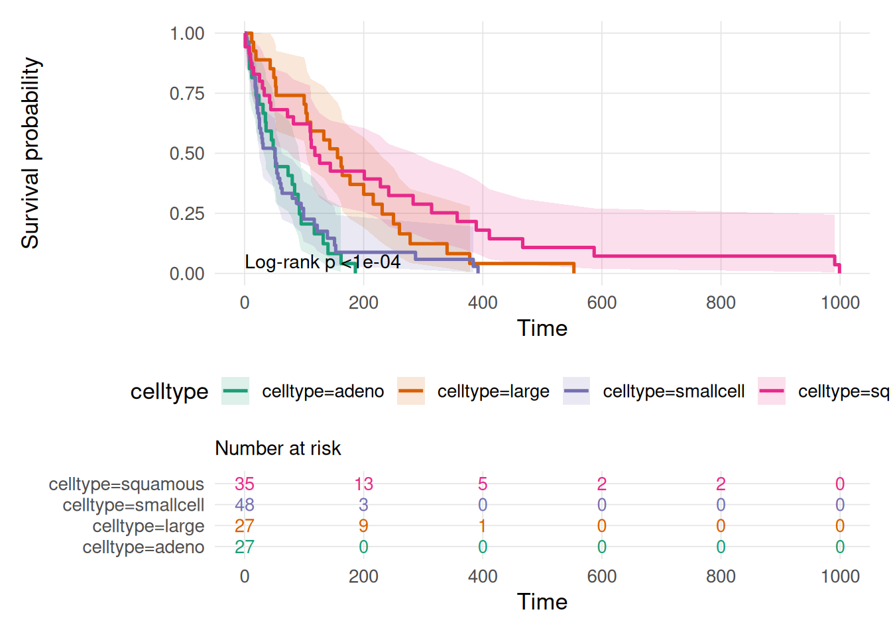
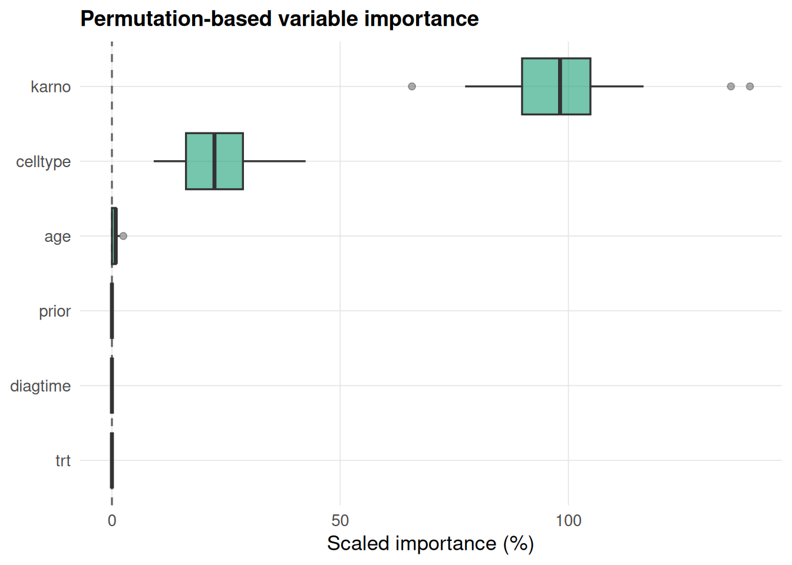

A unified benchmarking, evaluation, and interpretability interface for survival machine learning in R, from first submission to release
Imad El Badisy
2026-08-18
survalis is now on CRAN: CRAN.R-project.org/package=survalis. It provides one consistent interface, fit_*() / predict_*() pairs returning a standardized mlsurv_model and a survival-probability matrix, across 19 survival learners (semiparametric, parametric, tree-based, ensemble, boosting, kernel, and deep-learning), plus benchmarking, evaluation, calibration, and model-agnostic interpretation on top.
install.packages("survalis")
This post walks through what changed between the first CRAN submission candidate (0.7.0) and the current release (0.9.0): the new implementations, and the corrections made along the way.
One entry point for benchmarking: benchmark()
Comparing learners used to mean choosing between benchmark_default_survlearners() (plain k-fold CV) and benchmark_tuned_survlearners() (nested CV with per-learner hyperparameter tuning). benchmark() now dispatches to either from a single tune argument:
tune = TRUE runs the same call as nested CV, dispatching to benchmark_tuned_survlearners() with outer_folds/inner_folds instead. benchmark_default_survlearners() and benchmark_tuned_survlearners() both remain available directly for callers who don’t need the dispatch.
Time-dependent discrimination: timeroc_survmat()
The C-index and the Brier score summarize discrimination and calibration at a single horizon. timeroc_survmat() adds a vectorized cumulative/dynamic AUC curve over a vector of evaluation times, matching timeROC::timeROC(weighting = "marginal") to about 1e-3 (Uno et al. 2007 / Heagerty and Zheng 2005):
y <-Surv(veteran$time, veteran$status)mod_rsf <-fit_rsf(Surv(time, status) ~ age + karno + celltype, data = veteran, ntree =200)sp_rsf <-predict_rsf(mod_rsf, newdata = veteran, times = times)timeroc_survmat(y, predicted = sp_rsf, times = times)
plot_survcurve() adds a survminer-style Kaplan-Meier curve with a confidence ribbon, a log-rank p-value annotation, and an aligned number-at-risk table, built directly on theme_survalis() / scale_color_survalis() rather than depending on the survminer package. The risk table is composed with patchwork.
plot_survcurve(Surv(time, status) ~ celltype, data = veteran)

A consistent visual system: theme_survalis() and the color scales
Every plotting function used to call theme_minimal() with its own base_size, and grouped plots fell back to ggplot2’s default hue palette except for plot_survcurve(). theme_survalis() and the colorblind-friendly scale_color_survalis() / scale_fill_survalis() (ColorBrewer “Dark2”-based, interpolated beyond 8 levels) were retrofitted across every plotting function, plot_ale(), plot_pdp(), plot_shap(), plot_interactions(), plot_calibration(), plot_counterfactual(), plot_surrogate(), plot_tree_surrogate(), plot_varimp(), plot_survmat(), plot_survmetalearner_weights(), plot_benchmark(), cv_plot(), plot_survcurve(), so package figures read as one system instead of thirteen independent styles. Single-series hardcoded colors ("steelblue", "pink", "tomato", ad-hoc green/red hex codes) were replaced the same way, and every plot that can show both positive and negative values now draws a dashed zero-reference line.
As of 0.9.0, every one of those functions also takes a title argument: pass a custom string, leave it out for the previous auto-generated title, or pass title = NULL to drop it entirely for journals that require caption-only figures.
Uncertainty in variable importance: plot_varimp()
compute_varimp() computes permutation-based importance by repeating a metric drop over n_repetitions permutations per feature. It used to summarize those repetitions down to a single point estimate and discard them. plot_varimp() now draws the full per-repetition distribution as a boxplot instead of a lone point, and compute_varimp() keeps the raw values as a "raw_scores" attribute so the plot can use them (falling back to the old point-plot for hand-built summary tables without that attribute):
mod_cox <-fit_coxph(Surv(time, status) ~ age + karno + celltype, data = veteran)vi <-compute_varimp(mod_cox, times = times, metric ="ibs", n_repetitions =15, seed =1)p <-plot_varimp(vi)ggplot2::ggsave("featured.png", p, width =7, height =4.5, dpi =150)p

Migration to data.table
Every internal data-manipulation path, the CV/metrics engine (cv_survlearner(), cv_summary(), score_survmodel()), all nineteen tune_*() functions, cv_survmetalearner(), benchmark_tuned_survlearners(), compute_shap(), compute_calibration(), plot_survmat(), compute_varimp(), and the descriptive list_*() helpers, was migrated file by file from dplyr/tidyr/purrr/tibble to data.table. dplyr, tidyr, purrr, and tibble are no longer in Imports at all; data.table is now the sole data-manipulation engine. cv_summary()/score_survmodel() and summarise_benchmark() now round summary statistics to 3 decimals by default, consistently.
Corrections along the way
A few of these were silent correctness bugs, not just style:
auc_survmat() case definition. Cases were defined as events with time <= t_star instead of the canonical Uno/timeROC time < t_star. This fed directly into the "auc" metric used throughout score_survmodel(), benchmark_*(), and fit_survmetalearner(), so it was corrected everywhere at once.
Silently dropped learners in nested tuning.benchmark_tuned_survlearners() selected tuning-result columns with tuning_results[1, cols, drop = FALSE], relying on data.frame [ semantics; data.table’s [ doesn’t select columns from a variable the same way, so every fold for a data.table-migrated learner errored and the learner was quietly dropped with a warning. Fixed with a .select_cols() helper that works for both data.frame/tibble and data.table inputs.
tune_survsvm(refit_best = TRUE) crashes. A top-ranked grid candidate could fail to refit on the full dataset (a quadprog QP infeasibility that only shows up on certain BLAS backends, including CRAN’s OpenBLAS check machine). It now falls back to the next-best candidate and only errors if every candidate fails.
plot_interactions(type = "heatmap") readability. The white -> steelblue gradient had too little contrast in the mid-range and the zero-valued diagonal blended into the low end. Switched to a perceptually uniform viridis scale, flipped afterward so high interaction values read as dark rather than bright, matching conventional heatmap reading.
plot_pdp() per-time facets. Free y-axis scales made survival-probability panels visually incomparable across facets; now fixed to [0, 1] via coord_cartesian().
Stale generated docs breaking CI. Three .Rd files had hand-drifted out of sync with their roxygen source, using \donttest{} (which CI runs) instead of \dontrun{}, causing an example to fail on an undefined object. Regenerated from source and verified with R CMD check --run-donttest.